The people who make up the Haven
Staff, board, Community Patrol, and the consultants who bring specialized programs to the block.
Staff
Day-to-day operations, programs, and partner coordination.
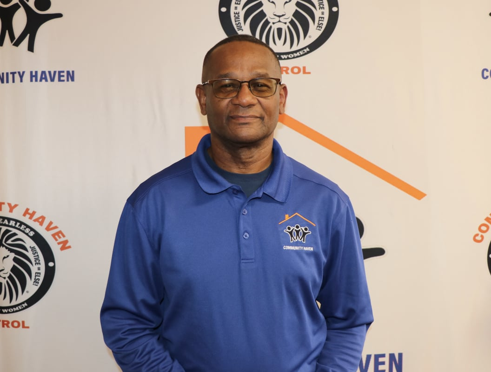
Kevin Muhammad
Chattanooga native and Westside native; B.S. Accounting, UTC. Oversees daily operations, department heads, grant compliance, and the Haven's partnership with the City of Chattanooga on the Community Patrol program.
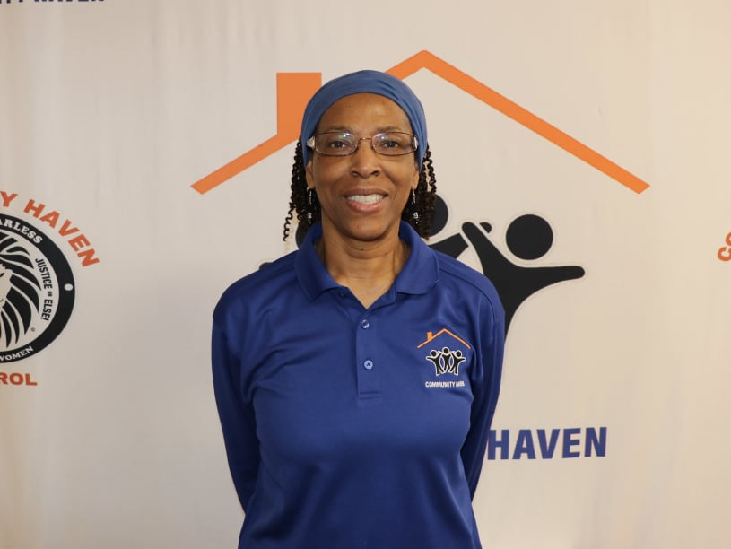
Victoria Dodds
Coordinates donations and runs the front office, including intake for Community Patrol administration.
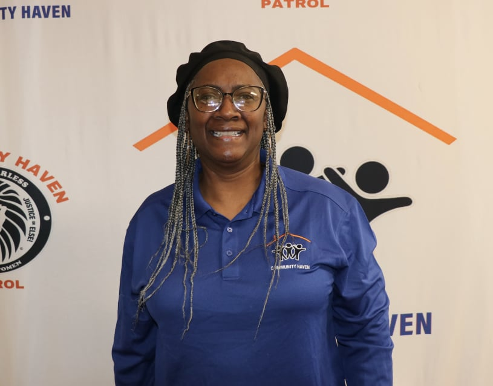
Veronica Carter
Manages Haven finances and compliance across programs, including Community Patrol.
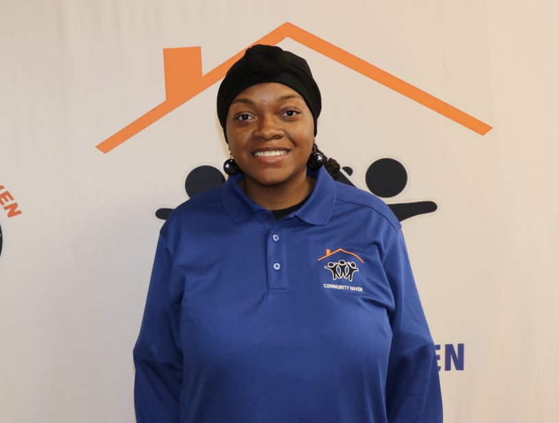
Marquita Timmons
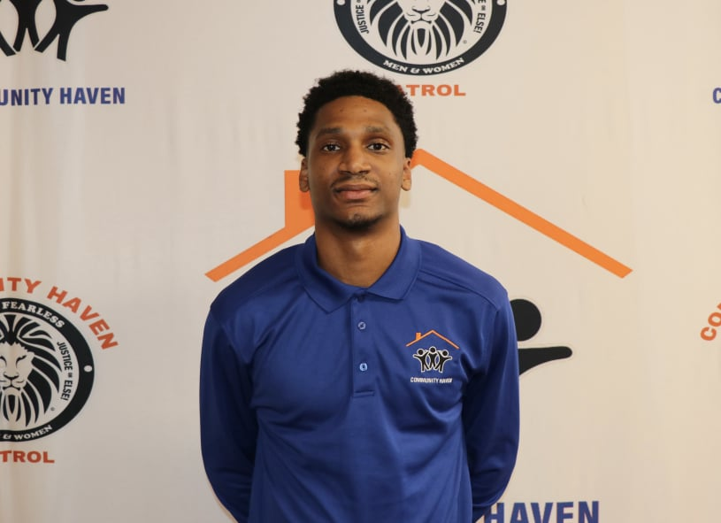
Jameel Dodds
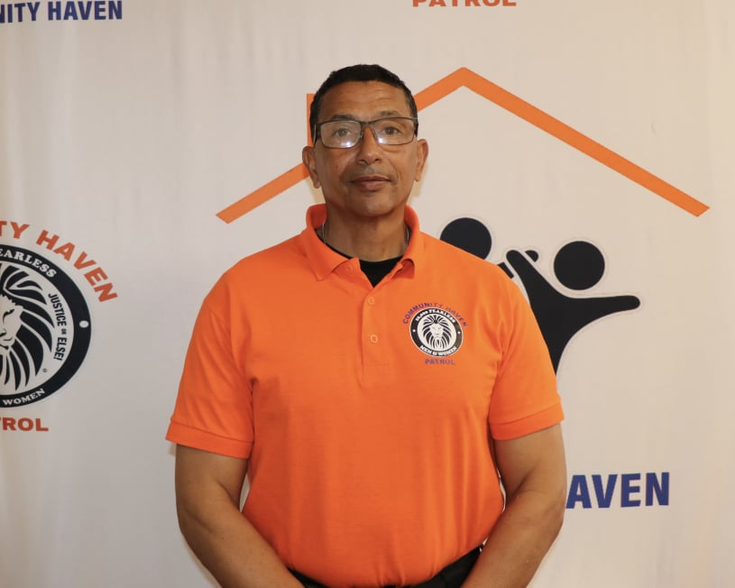
William Muhammad
Leads Community Patrol's field operations, modeled on the 10,000 Fearless Men and Women program.

Jamal Morris
Co-directs Camp Haven with April Morris. Full bio on the Camp Haven page.

April Morris
Co-directs Camp Haven with Jamal Morris. Full bio on the Camp Haven page.
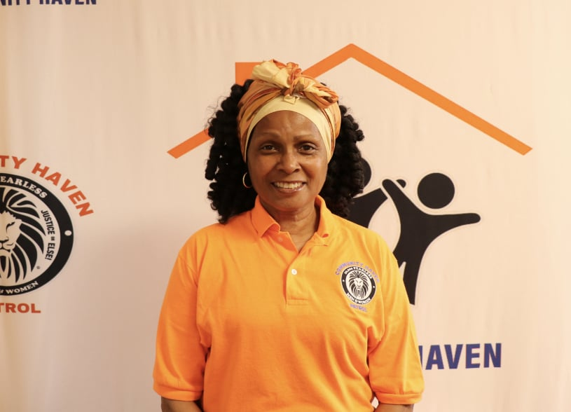
Sonja Muhammad
Susan Muhammad
Board of Directors
Governance and strategic direction for The Community Haven.
Donel Cochran
38 years at McKee Foods Corporation as Corporate and Transportation HR Manager. Served on the St. Nicholas School Board and Ooltewah High School Community Board; volunteer basketball coach.
Malik Dodds
Chattanooga native; B.S. Accounting, UTC (2016); MBA in Finance with honors, Mercer University (2022); Certified Scrum Master. Volunteers with Erlanger Hospital and the Chattanooga Red Cross.
Clomeisha Robinson Tumlin
Associate Professor and Business Division Department Head, Chattanooga State Community College. Two-time recipient of the First Horizon Business Chair of Excellence; 2017 Chattanooga Chamber Volunteer of the Year.
Jamal Morris
Also serves as Mentor Coordinator and co-directs Camp Haven. Full bio on the Camp Haven page.
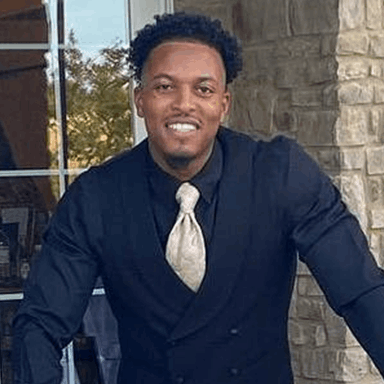
Noble Langley Orie
Two degrees from UTC, in Finance/Investments and Communications. As VP of a student-run investment fund, helped grow its portfolio from $250k to over $700k in three years, and was one of five UTC students who led their team to the school's first-ever Southeast regional stock research championship. Named a Distinguished Scholar in the College of Business and voted "Top Moc/Man on Campus" in 2017. Has since founded three companies and today runs Noble Living as a motivational speaker, business and financial consultant, investor, DJ, and coach.
Community Patrol
William Muhammad, Victoria Dodds, Veronica Carter, and Jameel Dodds (listed under Staff above) also lead Patrol administration. The rest of the field team:
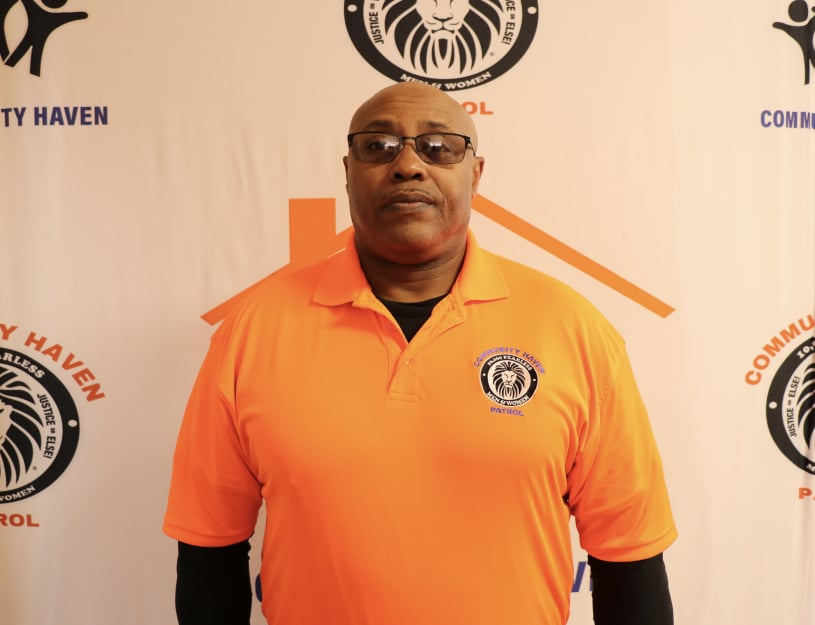
Andre Muhammad
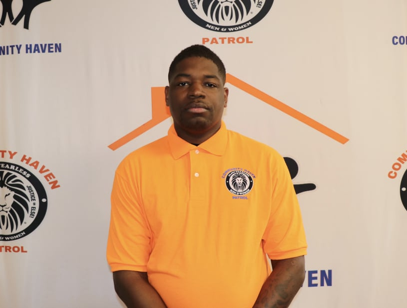
Dominique Timmons
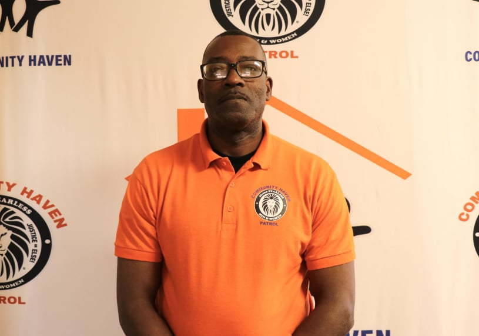
Macon Chain
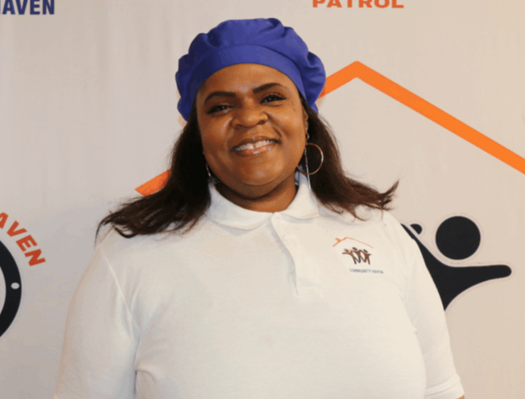
Tameka Chain
Consultants & Advisors
Specialists who bring dedicated programs to the Haven.
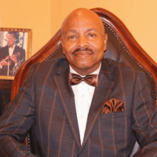
Min. Abdul Sharrieff Muhammad
Regional Minister, Nation of Islam. Co-developed the 10,000 Fearless Men and Women model that Community Patrol is built on. More on Community Patrol.


Pastor Charlotte Williams

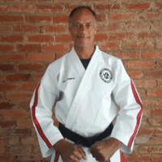
Terry Hanner
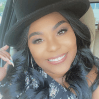
Keosha Brewster-Holloway

Dr. Erica Bass-Flimmons

Partners in the community
Elected officials, law enforcement, and organizations The Community Haven works alongside.
Chris Sands
Yusuf Hakeem
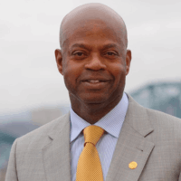
Warren Mackey
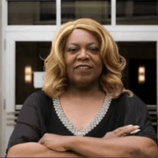
Marvene Noel
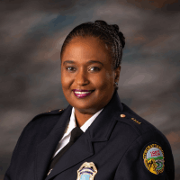
Chief Murphy
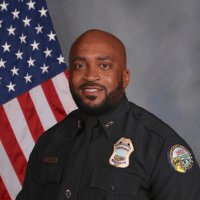